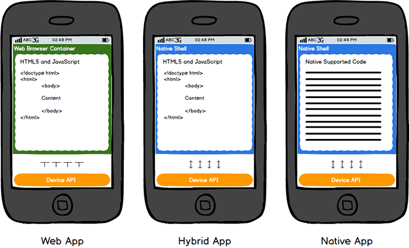
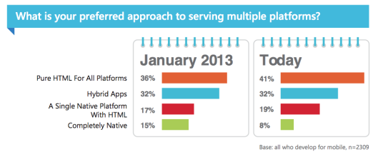
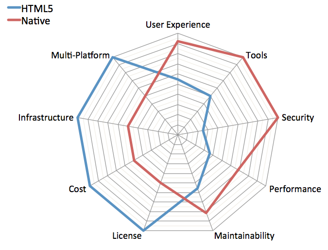
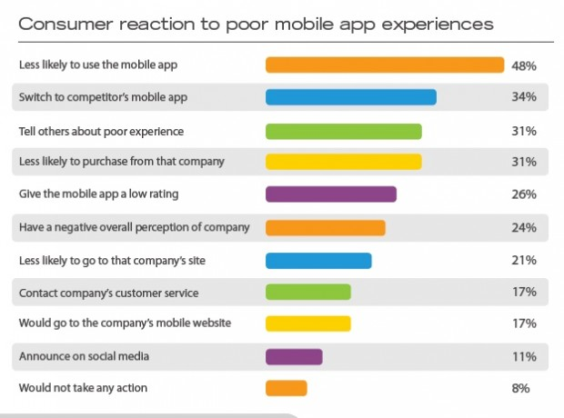
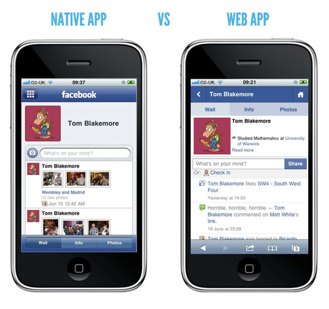
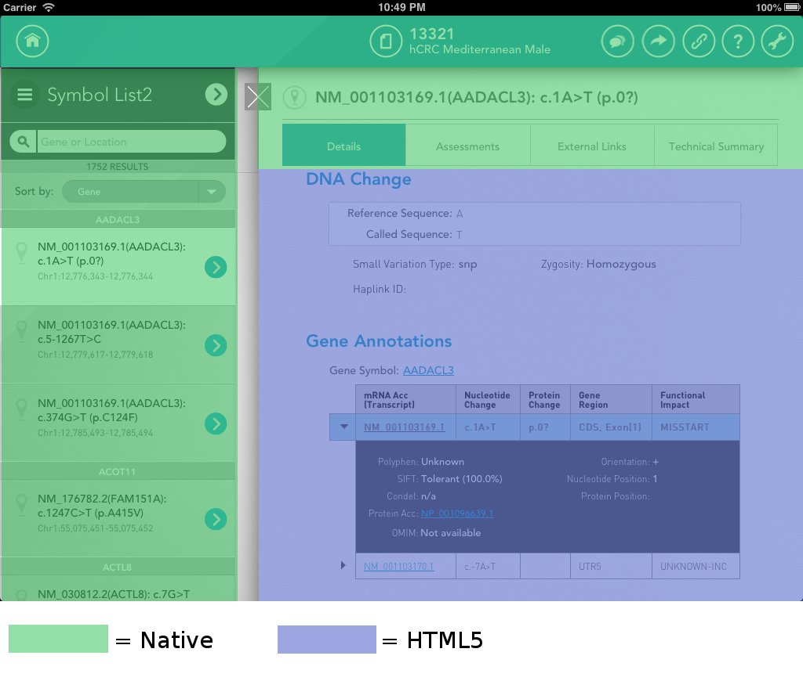
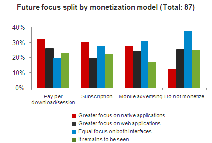
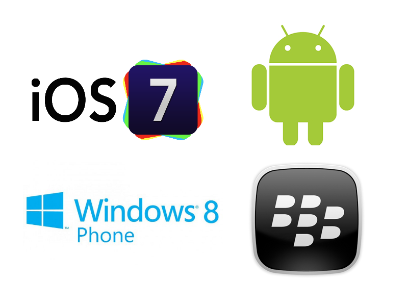

Tópicos
- Aplicações:
- Tendências de Mercado
- Aplicações HTML5 vs Nativas
- Frameworks de Desenvolvimento
- Is it the end of native apps?
Aplicações Nativas
- Desenvolvidas para plataformas específicas
- Instaladas directamente no dispositivo do utilizador
- Distribuídas através de lojas virtuais
- Play Store, Windows Store, App Store, Blackberry App World, Firefox Marketplace, Tizen Store
Aplicações HTML5
- Correm em qualquer plataforma
- Um browser moderno implementa a maioria dos standarts mais recentes do HTML5
- Existem na web e são acedidas através do motor de browser do dispositivo móvel do utilizador
“Write once, run anywhere”
Aplicações Híbridas
- Desenvolvidas sobre uma base de código nativo
- Utilizam o motor do browser do OS para correr
HTML e processar JavaScript localmente, o que constitui a aplicação

Tendências de mercado

- Os utilizadores preferem aplicações nativas
- Melhor performance, usabilidade e segurança
- Os programadores e publishers preferem aplicações HTML5
- Adaptação a qualquer OS e independência
Aplicações HTML5
vs Nativas

Experiêcia do utilizador
e desempenho

Aplicações Nativas: Mais rápidas e interactivas
Aplicações Web HTML5: Dependem de ligação à Internet e não tem o look and feel do OS


Monetização

Aplicações Nativas: Mais fáceis de rentabilizar, devido às lojas de aplicações
Custo e facilidade
de desenvolvimento
Aplicações Nativas:
- Requerem maior investimento e tempo de desenvolvimento
- Utilizam linguagens diferentes para cada OS
Aplicações Web HTML5:
- Menor investimento e implementação mais simples
- Utilizam HTML5, CSS e JavaScript
Fragmentação
Aplicações Nativas: necessidade de suportar múltiplas versões do mesmo SO

Aplicações Web HTML5: necessitam de suportar diferentes browsers, tendo em conta as suas limitações
Actualizações e controlo de versões
Aplicações Nativas: a rapidez de actualização depende da loja de distribuição e do seu download
Aplicações Web HTML5: são actualizadas automaticamente
Utilização de funcionalidades do Hardware/SO
Aplicações Nativas:
- Podem utilizar funcionalidades de hardware:
- Acelerómetro, GPS, câmera, giroscópio...
- Podem utilizar funcionalidades do SO:
- Touch events, push notifications, integração com o ambiente do SO
Utilização de funcionalidades do Hardware/SO
Aplicações Web HTML5:
- Muitas limitações na utilização de hardware e das funcionalidades do OS
- Dependem da interface do browser
Segurança
Aplicações Web HTML5:
- Facilidade de ataque
- Cross-site scripting
- Cookie manipulation
- SQL injection
- Dados em cache não encriptados
Segurança
Aplicações Nativas:
- Mais difíceis de atacar
- Mais fáceis de tornar seguras
- Sujeitas a testes de segurança (Lojas de Applicações)
Frameworks de Desenvolvimento
Is it the end of native apps?
NO.
Pelo menos por agora.
Referências
http://venturebeat.com/2013/11/20/html5-vs-native-vs-hybrid-mobile-apps-3500-developers-say-all-three-please/#vb-gallery:1:862913
http://dannybrown.me/2013/07/07/the-sunday-share-html5-vs-native-mobile-app-development/
http://mobile.smashingmagazine.com/2013/10/17/best-of-both-worlds-mixing-html5-native-code/
http://readwrite.com/2013/12/02/html5-mobile-native-apps-business-analytics-backend-services#awesm=~op8AKLKDHtIE2f
Referências
http://www.theguardian.com/media/appsblog/2013/apr/29/financial-times-html5-no-drawbacks
http://www.businessinsider.com/html5-vs-apps-heres-why-the-debate-matters-and-who-will-win-2012-12
http://www.general-play.com/app/gp2aea18h1f5i0/Nexus%207%20Camera%20Launcher.html
http://blog.meltmedia.com/2013/05/theres-more-than-one-way-to-build-mobile-apps/#.Uq1fApFUCOM
http://www.turtle-media.com/blog/2012/07/14/native-app-vs-web-app-why-hong-kong-mostly-gets-it-wrong/
Referências
http://www.iphonehacks.com/2013/08/judge-dismisses-app-store-monopoly-lawsuit.html
http://logos.wikia.com/wiki/Windows_Phone_Store
http://www.mozilla.org/en-US/about/partnerships/
http://www.clickz.com/clickz/column/2291711/html5-vs-mobile-apps-the-good-bad-and-ugly